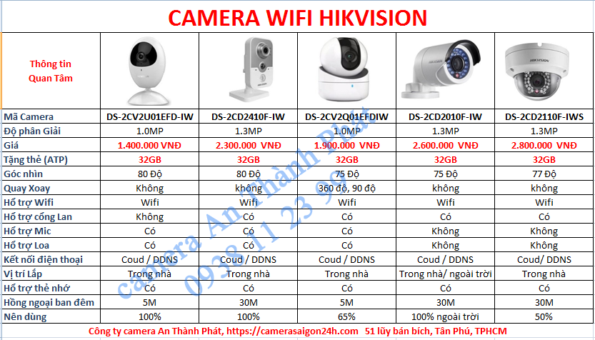
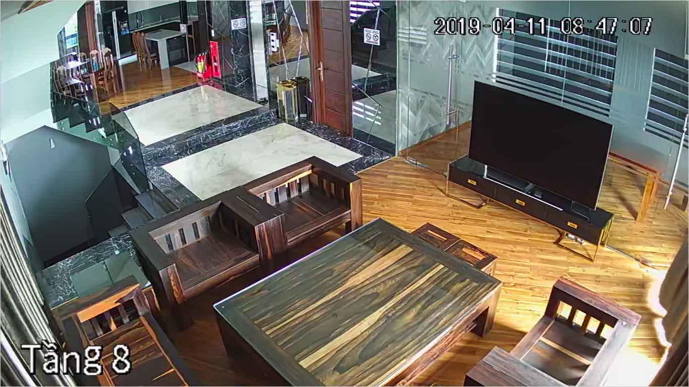
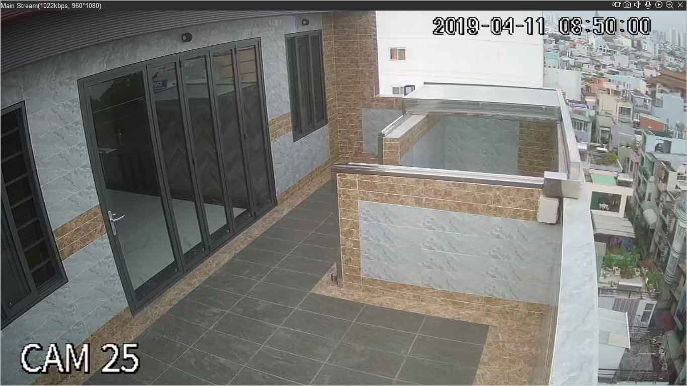
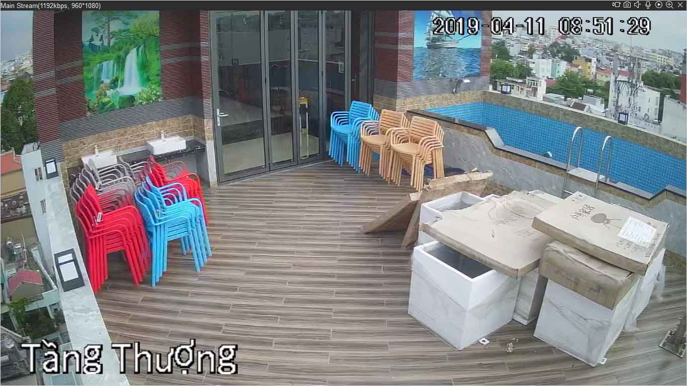
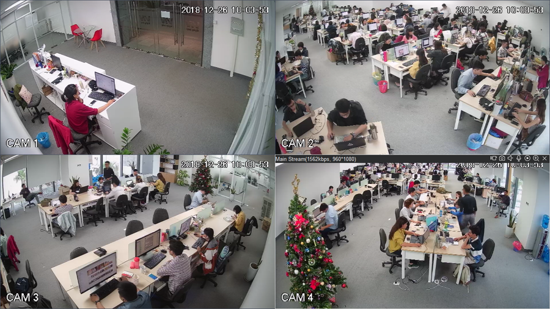
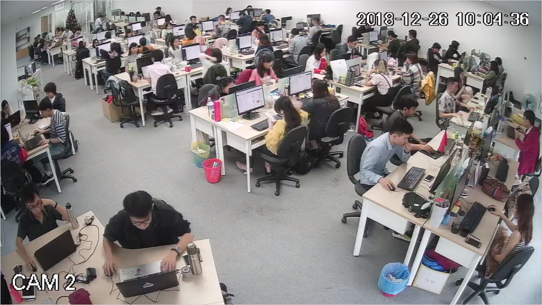
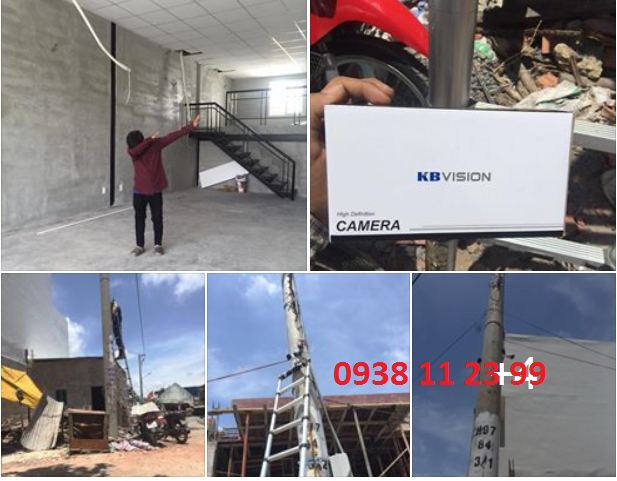
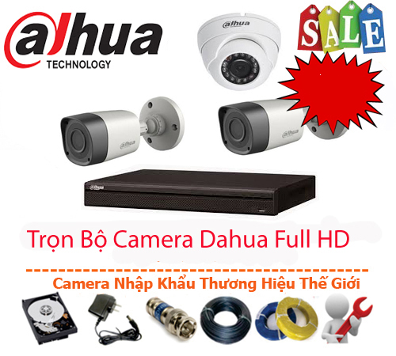
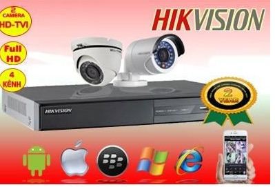
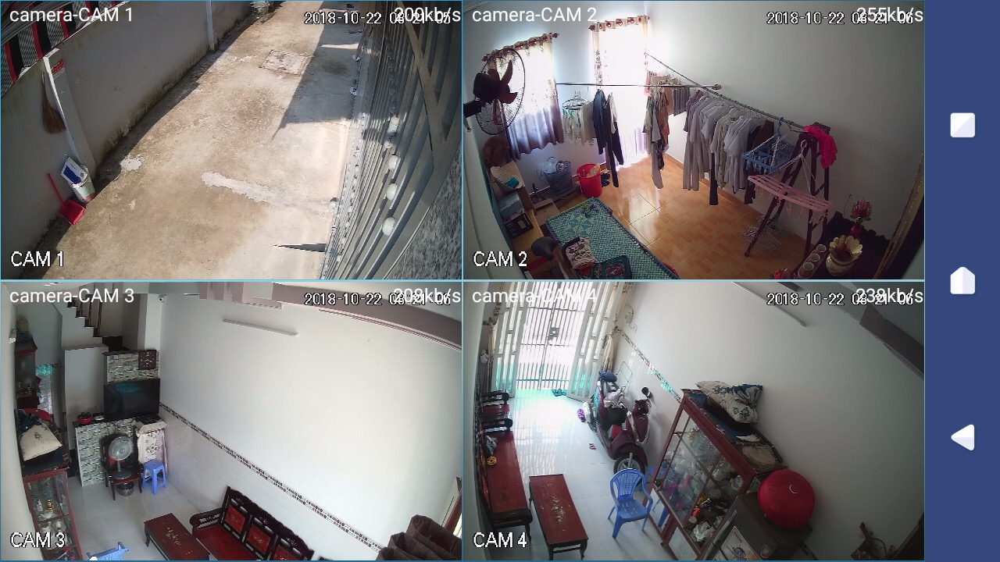

KHÁCH HÀNG CHO TẤT CẢ, TẤT CẢ CHO KHÁCH HÀNG
Đối với tập thể của chúng tôi, mỗi một khách hàng là mỗi một người thân. Cho nên tất cả các sản phẩm về camera quan sát chúng tôi phân phối hay lắp đặt cho quý khách hàng đều đến từ các thương hiệu camera lâu năm trên thị trường. Hàng hóa có chứng chỉ xuất xứ, xuất xưởng rỏ ràng, có nhà máy sản xuất lắp ráp, có bộ phận kiểm tra, kiểm định trước khi đưa đến người tiêu dùng.
Cam kết không dùng hàng trôi nổi không nhãn mác, cam kết chế độ bảo hành đúng thời gian quy định của nhà sản xuất. Căn cứ theo hợp đồng và biên bản nghiệm thu đã ký kết trước đó.
Khi có nhu cầu lắp đặt camera tại quận 12 hay các quận lân cận. Chúng tôi mời quý khách hàng tham khảo báo giá bên dưới. Giá trong báo giá có thể thay đổi theo thực tế công trình, khi nhân viên tới khảo sát sẽ báo cho bạn báo giá chính xác nhất nhé.
BẢNG BÁO GIÁ LẮP ĐẶT WIFI TRỌN GÓI CAMERA

Những lợi ích khi lắp camera ở quận 12 tại An Thành Phát.
+ Được khảo sát tư vấn trực tiếp tại nơi lắp đặt camera, đảm bảo vị trí chính xác, góc nhìn chuẩn. Không mất công di dời sau khi đã hoàn thành tốn thời gian hai bên.
+ Thiết bị camera tại An Thành Phát cung cấp cho khách hàng được phân phối, nhập khẩu trực tiếp có nguồn gốc xuất xứ thương hiệu từ Korea, Taiwan, Mỹ, Đức,…Các thông số kỹ thuật đã kiểm tra nghiêm túc của bề mặt bộ xử lý và cấp chứng nhận đầy đủ.
+ Thiết bị được bảo hành 24 tháng. Đặc biệt bảo trì, bảo hành, kiểm tra sự cố sau 24h từ khi nhận được báo tin của Các bạn.
+ Qui trình làm việc của An Thành Phát từ khảo sát sơ bộ, đến khi lên thiết kế bố trí lắp đặt và demo công cụ vô cùng chính xác. Sự chuẩn xác đến từng thông số kỹ thuật, đội ngũ hỗ trợ tận nơi đi đôi với tinh thần nhiệt huyết với khách hàng trong mọi trường hợp.
+ Demo sản phẩm trực tiếp tại nhà khách hàng thông qua điện thoại và máy tính.
+ Giám sát 24/24 qua điện thoại, laptop, tivi.....ở bất cứ nơi nào có internet hoặc 3G
+ Nếu bạn không xem trực tiếp được thì hệ thống sẽ lưu trữ dữ liệu trong bộ nhớ. Bạn có thể xem lại bất cứ lúc nào.
+ Camera hổ trợ thu tiếng nói giúp bạn nắm bắt rỏ hơn.
+ Hệ thống camera chống trộm có thể phát ra tín hiệu cảnh báo khi có người đột nhật, vượt rào...
+ Camera kết hợp với khóa từ không dây. Khi có người mở cửa camera sẽ phát lên tiếng “ hú” cảnh báo.
+ Bạn ở văn phòng bạn có thể giới thiệu cho đối tác của bạn về quy mô của xưởng sản xuất thông qua hệ thống camera mà An Thành Phát lắp đặt.
+ Giảm thiểu chi phí quản lý và đánh giá năng lực của từng nhân viên một cách trung thực nhất.
+ Là tài liệu vô cùng quan trọng cho bạn trong quá trình tố giác tội phạm, truy tìm tội phạm.
+ Ngoài ra tùy vào từng mục đích lắp camera của bạn mà camera mang lại những lợi ích khác nhau.






Camera tại quận 12
Và camera quận 12 được xem là giải pháp an ninh cho các cơ quan, cửa hàng cho đến những hộ gia đình nhỏ, nó như là người bạn không thể thiếu trong kinh doanh của người dân. Tất cả mọi người khi mở cửa hàng kinh doanh trên địa bàn quận 12 đều muốn giám sát an ninh cho nhà ở, cửa hàng, văn phòng làm việc của mình,… đây cũng là nhu cầu chung cho người dân quận 12 nói riêng và TP Hồ Chí Minh nói chung.
Khi tiếp nhận thông tin của quý khách hàng có nhu cầu lắp camera tại quận 12. Trong vòng 30 phút chúng tôi sẽ xuống tận nơi khảo sát, tư vấn trước khi ký kết hợp đồng hoàn toàn miễn phí. Trong quá trình khảo sát, nhân viên sẽ tư vấn các gói camera được lắp nhiều, tư vấn về các vị trí lắp camera sao cho hợp lý (không bị che, ngược sáng, hạn chế góc chết, tránh mất trộm...) đảm bảo khi lên hình camera sẽ phát huy hết tác dụng, không lệch lạc, góc nhìn rộng...
lắp camera nhà xưởng quận 12
Ngoài ra trong quá trình khảo sát như vậy nhân viên sẽ thiết kế đường đi dây tín hiệu và dây nguồn sao cho tiết kiệm nhất, đảm bảo tính thẩm mỹ cho ngôi nhà hay cửa hàng của ban.
Đặc biệt, khi khảo sát chúng tôi sẽ mang sản phẩm tới tận nhà bạn để bạn xem mẫu mã, độ chắc chắn của chiếc camera như thế nào, có phù hợp với vị trí bạn cần lắp hay không? Chúng tôi sẽ cho lên hình chiếc camera đó để bạn xem và đánh giá chất lượng. Điều mà ít có công ty lắp đặt camera nào thực hiện.
Khi cho ra đời dịch vụ gắn camera ở quận 12, công ty luôn bố trí đội ngũ kỹ thuật túc trực tại văn phòng công tại ở quận 12 24/7 để sẵn sàng phục vụ quý khách hàng. Khi có sự cố chúng tôi cử người tới tận nhà để xử lý dứt điểm mang lại tình trạng hoạt động tốt nhất cho hệ thống camera.
DỊCH VỤ LẮP CAMERA TẠI QUẬN 12.
LẮP CAMERA GIÁM SÁT VĂN PHÒNG QUẬN 12 
Lắp camera giám sát văn phòng tại quận 12 là một trong những dịch vụ công ty camera An Thành phát triển khai thông thường sử dụng cho những công ty dịch vụ có văn phòng đặt tại trụ sở quận 12. Thông thương camera giám sát văn phòng thường sử dụng những gói camera thông dụng giá rẻ, tùy vào đặt điểm của mỗi văn phòng có thể nâng cấp lên 1 camera có thu âm để phù hợp việt giám sát quản lý nhân viên, Lắp camera giám sát văn phòng tại quận 12 giá rẻ giám sát từ xa qua điện thoại ổn định là tiêu chí hàng đầu.
LẮP CAMERA GIÁM SÁT GIA ĐÌNH QUẬN 12 
Lắp camera giám sát gia đình giá rẻ là một trong những giải pháp bảo vệ An Ninh hiệu quả cho gia đình được lựa chọn hàng đầu ngày nay. Lắp camera giám sát gia đình tại quận 12 thường sử dụng những thương hiệu camera quan sát chất lượng sử dụng lâu dài, Giám sát qua điện thoại từ xa ổn định là tiêu chí đặt lên hàng đầu khi lắp camera gia đình tại quận 12. Giá rẻ lá một phần tiêu chí ổn định khi giám sát từ xa là giá trị quan trọng hơn để đảm bảo an nhinh cho gia đình bạn tại quận 12. An Thành Phát Luôn bên bạn khi cần.
LẮP CAMERA GIÁM SÁT CỬA HÀNG TẠI QUẬN 12 
Lắp camera giám sát cửa hàng tại Quận 12 thường sử dụng những gói camera giá rẻ phù hợp với từng nhu cầu kinh doanh, Thông thường cửa hàng sử dụng gói camera 4,5tr bộ 4 camera chất lượng hình ảnh FULL HD 1080P, Lắp camera giám sát cửa hàng tại quận 12 bảo hảnh 24 tháng tận nơi dịch vụ tốt nhất đổi sản phẩm trong 12 tháng nếu lỗi về thiết bị duy nhất tại An Thành Phát, Công ty lắp camera cửa hàng giá rẻ tại quận 12 uy tín hàng đầu dịch vụ tốt nhất giải pháp giám sát quản lý cửa hàng hiệu quả. Lắp camera cửa hàng tại quận 12 nhiều kinh nghiêm.
LẮP ĐẶT CAMERA NHÀ XƯỞNG QUẬN 12 
Lắp camera giám sát nhà xưởng tại quận 12 An Thành Phát có nhiều kinh nghiệm lắp camera giám sát hiệu quả giám sát từ xa, dịch vu lắp camera nhà xưởng giá rẻ dịch vụ tốt giám sát từ xa hiệu quả, Lắp camera giám sát tại quận 12 giá rẻ chuyên dụng cho nhà xưởng, Công ty lắp camera giám sát nhà xưởng nhiều kinh nghiệm giá rẻ hiệu quả giám sát từ xa ổn định , camera rõ nét tiết kiệm chi phí, Lắp camera nhà xưởng tại quận 12 với quy mô lớn giám sát qua điện thoại quản lý từ xa, Công ty camera An Thành Phát chuyên lắp camera nhà xưởng giá rẻ tại quận 12.
LẮP CAMERA GIÁM SÁT KHO QUẬN 12 
Lắp camera giám sát kho hàng quận 12 công ty camera An Thành Phát luôn tư vấn khách hàng sử dụng những dòng sản phẩm camera chính hãng , Dịch vụ lắp camera quan sát kho hàng chất lượng uy tín nhất tại quận 12 dịch vụ tốt và ổn định giúp giám sát quản lý kho hàng từ xa ổn định sử dụng camera quan sát chính hãng chất lượng tốt trong điều kiện thiếu sáng, giúp giám sát chi tiết khi cần. Quận 12 là một trong những khu vực tập trung nhiều kho hàng lớn và giải pháp giá rẻ tiết kiệm luôn được đặt lên hàng đầu khi lắp camera kho hàng tại quận 12.
LẮP CAMERA GIÁM SAT QUA ĐIỆN THOẠI QUẬN 12 
Lắp camera giám sát tại quận 12 qua điện thoại từ xa hiện nay đa phần là su hướng để đảm bảo an ninh gia đình văn phòng, tuy nhiên lựa chọn những dòng camera giám sát từ xa ổn định là điều cần thiết, dĩ nhiên hiện nay camera giám sát nào cũng có thể xem qua mạng từ xa bằng điện thoại , còn vấn đề ổn định hay không là do công nghệ cấu thành. để tìm hiểu thêm bạn Điện Thoại: 0938 1 12 3 99 để được tư vấn lựa chọn những dòng camera quan sát phù hợp ổn định khi xem từ xa bằng điện thoại. Giải pháp tên miền hay Cloud đều có những ưu điểm riêng.

Trọn bộ camera quan sát Quận 12 bao gồm
- Đầu ghi hình camera quan sát 4 kênh, 8 kênh, 16 kênh phụ thuộc vào số lượng camera.
- Ổ cứng lưu trữ 250GB, dùng cho số lượng 4 camera và, 500 GB dành cho 5 đến 8 camera. và 1 TB dùng cho từ 9 đến 16 camera
- Số lượng camera cần thiết phụ thuộc vào số lượng của khách hàng.
- Tặng nguồn chuyển điện loại 1 có ổ định điện áp tương ứng số lượng camera
- Khuyến mãi phụ kiện, Jack đấu nối, đinh móc băn keo đủ để sử dụng
- Miễn phí nhân công lắp đặt camera tại Quận 12 1 ngày
- Báo giá chưa bao gồm VAT khi khách hàng yêu cầu.
Giá lắp 1 camera Quận 12 Dahua: 3.000.000
Giá lắp 2 camera Quận 12 Dahua: 3.500.000
Giá lắp 3 camera Quận 12 Dahua: 4.000.000
Giá lắp 4 camera Quận 12 Dahua: 4.500.000
Giá lắp 5 camera Quận 12 Dahua: 6.000.000
Giá lắp 6 camera Quận 12 Dahua: 6.500.000
Giá lắp 7 camera Quận 12 Dahua: 7.000.000
Giá lắp 8 camera Quận 12 Dahua: 7.500.000
Giá lắp 9 camera Quận 12 Dahua: 10.300.000
Giá lắp 10 camera Quận 12 Dahua: 10.800.000
Giá lắp 11 camera Quận 12 Dahua: 11.300.000
Giá lắp 12 camera Quận 12 Dahua: 11.800.000
Giá lắp 13 camera Quận 12 Dahua: 12.300.000
Giá lắp 14 camera Quận 12 Dahua: 12.800.000
Giá lắp 15 camera Quận 12 Dahua: 13.300.000
Giá lắp 16 camera Quận 12 Dahua: 13.800.000
Thông thường, nghề camera chỉ là nghề tay trái của một số người mà thôi. Cho nên họ không quan tâm tới uy tính doanh nghiệp, triết lý kinh doanh...Bạn đặc biệt chú ý tới các loại hình này nhé. Tránh phải tình trạng tiền mất tật mang . Trong quá trình hình thành và phát triển công ty An Thành Phát gặp rất nhiều trường hơp như thế.
Cảm thông với người tiêu dùng, khi có khách hàng gặp trường hợp đó. Chúng tôi vẫn tới xử lý đồng thời vẫn bảo hành 2 năm cho thiết bị camera cũ của họ.
Tại An Thành Phát mục đích thành lập doanh nghiệp là mang lại giá trị tài chính cho đội ngũ công nhân viên của công ty. Đồng thời đến quý khách hàng là người tiêu dùng giá trí về chất lượng, độ úy tín, chuyên nghiệp cho tất cả các dịch vụ mà công ty cung cấp.

Trọn bộ camera quan sát Quận 12 bao gồm
- Đầu ghi hình camera quan sát 4 kênh, 8 kênh, 16 kênh phụ thuộc vào số lượng camera.
- Ổ cứng lưu trữ 250GB, dùng cho số lượng 4 camera và, 500 GB dành cho 5 đến 8 camera. và 1 TB dùng cho từ 9 đến 16 camera
- Số lượng camera cần thiết phụ thuộc vào số lượng của khách hàng.
- Tặng nguồn chuyển điện loại 1 có ổ định điện áp tương ứng số lượng camera
- Khuyến mãi phụ kiện, Jack đấu nối, đinh móc băn keo đủ để sử dụng
- Miễn phí nhân công lắp đặt camera tại Quận 12 1 ngày
- Báo giá chưa bao gồm VAT khi khách hàng yêu cầu.
Giá lắp 1 camera Quận 12 : 3.000.000
Giá lắp 2 camera Quận 12 : 3.500.000
Giá lắp 3 camera Quận 12 : 4.000.000
Giá lắp 4 camera Quận 12 : 4.500.000
Giá lắp 5 camera Quận 12 : 6.000.000
Giá lắp 6 camera Quận 12 : 6.500.000
Giá lắp 7 camera Quận 12 : 7.000.000
Giá lắp 8 camera Quận 12 : 7.500.000
Giá lắp 9 camera Quận 12 : 10.300.000
Giá lắp 10 camera Quận 12 : 10.800.000
Giá lắp 11 camera Quận 12 : 11.300.000
Giá lắp 12 camera Quận 12 : 11.800.000
Giá lắp 13 camera Quận 12 : 12.300.000
Giá lắp 14 camera Quận 12 : 12.800.000
Giá lắp 15 camera Quận 12 : 13.300.000
Giá lắp 16 camera Quận 12 : 13.800.000

Lắp camera quan sát KBIVISON tại quận 12 có tốt hay không ? có thể nói thương hiệu camera quan sát kbvision USA là một trong những thương hiệu đáng tin cây trong năm nay, hầu như những sản phẩm camera quan sát lắp đặt tại quận 12 sử dụng camera KBVISION USA khách hàng rất hài lòng về chất lượng sản phẩm cũng như chính sách phục vụ của thương hiệu camera KBVISION.
Công ty camera An Thành Phát nhà phân phối chính thức thương hiệu camera KBVISION USA tại quận 12. công ty luôn có những chính sách phù hợp, chiết khấu cao và dịch vụ tốt nhất cho khách hàng khi lắp camera quan sát quận 12 cho cửa hàng, văn phòng, gia đình, nhà xưởng, xưởng sản xuất và những công trình quy mô lớn tại quận 12. An Thành Phát luôn đưa ra những giải pháp lắp camera giá rẻ phù hợp tiết kiệm chi phí nhất cho khách hàng. Đảm bảo hệ thống camera quan sát tại quận 12 luôn hoặt động ổn định chất lượng tốt.

Thương hiệu camera quan sát HIKVISION tại quận 12 là một trong những thương hiệu camera tốt nhất trên thị trường hiện nay, Sản phẩm camera HIKVISION được sử dụng trong nhiều dự án lớn tại Việt Nam. Giá thành rẻ, chất lượng tốt phù hợp với thị hiếu người Việt. An Thành Phát cung cấp nhiều giải pháp lắp camera quan sát cho khách hàng tại quận 12. Sử dụng công nghệ camera HDTVI cho hình ảnh lên đến độ phân giải 4K chuẩn nén hình ảnh h265+ tiêt kiệm dung lương lữu trữ hình ảnh camera giám sát. phù hợp cho những dự án lắp camera nhà xưởng tại quận 12 cần lưu trữ lâu.
Lắp camera HIKVISION tại quận 12 công ty An Thành Phát với giá rẻ sản phẩm camera ổn định giám sát qua điện thoại áp dụng công nghệ tiên tiến, HIKconect và tên miên camera. Camera quan sát HIKISION tại quận 12 giá rẻ phù hợp cho kho hàng, cửa hàng gia đình và nhà xưởng, giá rẻ tiết kiệm chất lượng hình ảnh sắt nét giám sát ổn định qua điện thoại từ xa.

Dịch vụ sau lắp đặt camera quan sát quận 12
Dịch vụ sau khi bán sản phẩm và lắp đặt camera quan sát quận 12 của chúng tôi luôn đặt lợi ích của quý khách lên hàng đầu. Bất kỳ thời điểm nào khi hệ thống camera gặp lỗi sẽ được đội nghũ kỹ thuật năng động của chúng tôi đến khắc phục một cách nhanh chóng, không phải để khách hàng chờ đợi làm ảnh hưởng đến công việc của mình. Công ty An Thành Phát luôn ý thức rất rỏ chất lượng sau khi lắp đặt camera quan sát quyền lợi và lợi ích của khách chính là một phần góp phần cho sự phát triển của doanh nghiệp chúng tôi.
Hiện nay có nhiều nơi vì lợi nhuận của mình mà sau khi lắp đặt camera quan sát tại quận 12 họ chọn sản phẩm không đúng chất lượng hay hàng xuất xứ không rỏ ràng, dịch vụ sửa chữa khi xự cố xảy ra chập chạm, chế độ bão hành không rỏ ràng. Nhưng đối với Công ty An Thành Phát quý khách luôn an tâm về dịch vụ của chúng tôi được xem là tốt nhất, hoàn hảo nhất.
VỚI KINH NGHIỆM VÀ UY TÍN HƠN 9 NĂM LÀ NHÀ PHÂN PHỐI VÀ LẮP ĐẶT HỆ THỐNG CAMERA QUAN SÁT CHÍNH HÃNG TỪ TAIWAN, KOREA, USA...CHÚNG TÔI TỰ TIN KHẲNG ĐỊNH VỀ CHẤT LƯỢNG DỊCH VỤ CŨNG NHƯ CHẤT LƯỢNG SẢN PHẨM MÀ CHÚNG TÔI CUNG CẤP.

Thương hiệu camera Dahua là một trong những thương hiệu camera tiên phong trong lĩnh vực camera quan sát an ninh. Lắp camera Dahua quận 12 giá rẻ công ty An Thành phát , sử dụng công nghệ camera HDCVI cho hình ảnh sáng đep trung thực. truyền tải hình ảnh qua cáp đồng trục ổ định. Lắp camera Dahu quận 12 giá rẻ ổn định giám sát cửa hàng kho hàng nhà xưởng, Thương hiệu camera Dahua quận 12 sử dụng công nghệ cloud có server đặt tại việt Nam giúp giám sát qua điện thoại nhanh ổn định.
Dịch vụ lắp camera quận 12 thương hiệu camera Dahua số 1 thế giới về giải pháp An Ninh, tích hợp nhiều công nghệ camera quan sát thương hiệu dahua. Với công nghệ nightbreaker công nghệ camera HDCVI, công nghệ camera IP đây l2 những công nghệ camera quan sát hàng đầu mà thương hiệu camera quan sát Dahua đang sở hữu bằng sáng chế. Việc lắp camera quan sát quận 12 thương hiệu Dahua là một trong những lựa chọn đáng tin cây cho gia đình cửa hàng.

Camera quan sát Vantech là một trong những thương hiệu camera hàng đầu tại Việt Nam, Vantech là thương hiệu Việt Chất lượng tốt Giá cả cạnh tranh. Lắp camera Vantech quận 12 là lựa chon thương hiệu việt giá rẻ. Công ty camera An Thành Phát luôn mang đến khách hàng tại quận 12 những giải pháp giám sát hiệu quả giá rẻ ổn định, Thương hiệu camera Vantech sở hữu nhiều công nghệ camera quan sát như, công nghệ AHD, Camera HDCVI, Camera HDTVI, Camera IP, và những công nghệ zoom soay, với giá thành hợp lý, phù hợp triển khai những dự án lớn tại quận 12 như nhà xưởng, kho hàng , công trình giao thông nhà phố công cộng.
Lắp camera quan sát Vantech quận 12 là lựa chọn thương hiệu camera Việt giá rẻ hình ảnh sáng đẹp. Vantech Việt Nam đã mở rộng sang một số thị trường camera quan sát Lào, Thái lan, campuchia với chất lượng sản phẩm tốt nhất giá rẻ hình ảnh sáng đẹp với giá thành rẻ. Lắp camera quận 12 Vantech là giải pháp tiết kiệm.
Công ty lắp camera quan sát quận 12 An Thành Phát là một trong những công ty camera uy tín hàng đầu trên thị trường dịch vụ lắp đặt sửa chửa camera quan sát tại quận 12, với bộ phận kỹ thuật thâm niên cao, có nhiều kinh nghiệm trong những dự án lắp camera cho nhà xưởng với chi phí tiết kiệm, giải pháp hoàn thiện. Dịch vụ lắp camera quan sát tại quận 12 dịch vụ tốt nhất, Công ty luôn sử dụng những dòng sản phẩm camera quan sát chính hãng chất lượng tốt sản phẩm được bảo hành chính hãng toàn quốc
Tiêu chí công ty camera An Thành Phát luôn mang lại những giá trị tốt nhất cho khách hàng, Thông thường những dự án lắp camera quan sát quận 12 chủ yếu sử dụng cho gia đình nhà riêng.
Khách Hàng Mới Trong Khu Vực Quận 12
- Khách Lắp Camera anh long Địa điểm lăp đặt camera 039/1c duong vường lài ,an phú đông ,quận 12 Sử dụng Dịch vụ camera quan sát 4 camera ip KX-H13WN(4 thẻ nhớ 32g)
- Khách Lắp Camera Địa điểm lăp đặt camera 551/36 Lê Văn Lương , Hiệp Thành , Quận 12 Sử dụng Dịch vụ camera quan sát 4 camera KX-2111C4
- Khách Lắp Camera CÔ LÊ THỊ HOA Địa điểm lăp đặt camera 606 nguyễn văn quá , p Đông hưng thuận . Quận 12 Sử dụng Dịch vụ camera quan sát 1 đầu ghi kx-7108sd6
- Khách Lắp Camera Anh quyền Địa điểm lăp đặt camera Cầu cống hợp số 4. Thạnh xuân 52. Đường bùi công trưng quan 12 Sử dụng Dịch vụ camera quan sát Dau ghi kv 4 kênh . Hdd 250 gb. 2 con thân kb 2.0
- Khách Lắp Camera Địa điểm lăp đặt camera 44G3 đường DD5 p.Tân Hưng Thuận , Quận 12 Sử dụng Dịch vụ camera quan sát bán tên miền
- Khách Lắp Camera chị lý Địa điểm lăp đặt camera 94 Võ Thị Liễu Phường An Phú Đông Quận 12 Sử dụng Dịch vụ camera quan sát 2 camera yoosee
- Khách Lắp Camera Võ Văn Phi ( Đại diện Đỗ MInh Luân) Địa điểm lăp đặt camera DD7, Phường Tân Hưng, Quận 12 Sử dụng Dịch vụ camera quan sát đã ứng 30% theo hợp đồng 3.300.000 thu them 3 500 000 tien day con lai 7 700 000
- Khách Lắp Camera mơ Địa điểm lăp đặt camera 58/10 đông hưng thuận 6, quận 12 Sử dụng Dịch vụ camera quan sát 2 CAMERA KBVISION (KX-H30PWN), THẺ NHỚ 128G
- Khách Lắp Camera Địa điểm lăp đặt camera 121/30 Trung mỹ tây,quan 12 Sử dụng Dịch vụ camera quan sát ds-7104HGHI-F1, ds-2CE56D0T-IRP(3 dom 1 than) hdd 250GB
- Khách Lắp Camera Chị Sen Địa điểm lăp đặt camera 48/8 Tân Chánh Hiệp 26 , Tân Chánh Hiệp , Quận 12 Sử dụng Dịch vụ camera quan sát Bắt thêm 1 camera DS-2CE56COT-IRP
- Khách Lắp Camera Chị Loan Địa điểm lăp đặt camera 517A Lê Thị Riêng , Quận 12 Sử dụng Dịch vụ camera quan sát 1 đầu ghi kx-7104td6 ,2 cam kx-1301c , 1 cam kx-1302c
- Khách Lắp Camera hồ quang trung Địa điểm lăp đặt camera 65n/3 đường ht05 quận 12. //với đường nguyễn ảnh thủ Sử dụng Dịch vụ camera quan sát bọ hik 2.0. đầu ghi DS-7104HGHI. 3 THÂN DS-2CE16DOT-IRP. 1 DUME DS-2CE56DOT-IRP. ổ cứng 500g. pass modum: DSNW8eaaa130
- Khách Lắp Camera Bách Hoá Sắc Màu Địa điểm lăp đặt camera Số 18 Đường TX 52 , p Thạnh Xuân , Quận 12 (Đi đg Hà Huy Gáp, gần cầu phú long cũ cầu sắt) Sử dụng Dịch vụ camera quan sát 1 đầu ghi hình 8 kênh kx-7108td5, ổ cứng 500G, 4 thân kx-1003c4
- Khách Lắp Camera Chị Ngọc Địa điểm lăp đặt camera 14D Đường HT23 , p Hiệp Thành , Quận 12 Sử dụng Dịch vụ camera quan sát Bán đầu ghi hình camera Questek Q08 - 5004D5
- Khách Lắp Camera Chi hanh Địa điểm lăp đặt camera 498 trường chinh quận 12 Sử dụng Dịch vụ camera quan sát Đầu ghi kb 7104td5 2 camera kx 2012c4 có bắt thêm 1 cam yoosee cách mấy ngày sau - Khách Lắp Camera Anh Khanh Địa điểm lăp đặt camera 76/35/19 TTN05 P.Tân thì nhất. Quận 12 Sử dụng Dịch vụ camera quan sát Đầu ghi kx-7108td5 cam 2.0 2 dume 2012C4. 3 thân 2011C4. Ổ cứng 1T đi đồng trục với sino sám ống cứng
- Khách Lắp Camera anh anh Địa điểm lăp đặt camera thạnh lộc 41 , quận 12 Sử dụng Dịch vụ camera quan sát 1 đầu ghi vanteck( iwath dvr 2) 3 camera thân vdtech ổ cứng 500gb
- Khách Lắp Camera Địa điểm lăp đặt camera khu phố 009. hẻm đối diện kdl bến xưa quận 12 Sử dụng Dịch vụ camera quan sát bộ thân ttp. đầu ghi 4 460 cũ. 3 thân, ổ cứng 500Gb
- Khách Lắp Camera Anh Khiêm Địa điểm lăp đặt camera 33 Đường DD2 , p Tân Hưng Thuân , Q12 ( Phía Sau Chơ An Sương ) --- 4/26/2018 dời 4 cam sang chỗ mới 44G3 đường DD5 p.Tân Hưng Thuận , Quận 12 Sử dụng Dịch vụ camera quan sát Bộ hik camera 2 con thân 2 con dom ,Đầu ghi 4 , ổ cứng 250G DỜi 4 camera sang nhà mới
- Khách Lắp Camera anh minh Địa điểm lăp đặt camera 194/5 tan thoi nhat 17 (ttn17) quan 12 Sử dụng Dịch vụ camera quan sát dau ghi 8160. 2 dume112. camera còn lại của người ta
- Khách Lắp Camera a an Địa điểm lăp đặt camera 108hahuygiap , quận 12 Sử dụng Dịch vụ camera quan sát 1 đầu ghi 4 kênh VT 1 thân VT 2 dome VT 1 ổ cứng 1TB
- Khách Lắp Camera anh ngọc Địa điểm lăp đặt camera 14D HT23-quận 12 Sử dụng Dịch vụ camera quan sát lắp đặt camera 4 dome(112AHD)
- Khách Lắp Camera Công ty CP TM Xăng AU Việt Địa điểm lăp đặt camera 22/7 TL 15 ,phường Thạnh Lộc,quận 12 Sử dụng Dịch vụ camera quan sát bắt bộ 4 camera VP-122AHDM,đầu ghi 4 kênh,ổ cứng 500gb
- Khách Lắp Camera Chị Nga Địa điểm lăp đặt camera 119/6C Xuân Thới Thượng,quận 12 Sử dụng Dịch vụ camera quan sát bắt bộ 4 camera VP-112AHDM Ổ CỨNG 500GB ĐẦU GHI 4 KÊNH
- Khách Lắp Camera Chú Tuấn Địa điểm lăp đặt camera 36/1 Tô Ngọc Vân,quận 12 Sử dụng Dịch vụ camera quan sát bắt bộ camera 4 cam QTX-3701AHD DẦU GHI 4 KÊNH,Ổ CỨNG 500GB
- Khách Lắp Camera Địa điểm lăp đặt camera 399 Lê Văn Khương,quận 12 Sử dụng Dịch vụ camera quan sát tạm ứng trước của tổng bảng báo giá 15.250.000vnd
- Khách Lắp Camera Nguyễn Hồng Khang Địa điểm lăp đặt camera 551/212/60/10 Khu Phố 7,quận 12 Sử dụng Dịch vụ camera quan sát
- Khách Lắp Camera Trần Quang Minh Địa điểm lăp đặt camera 64 ĐHT 05 KP07,Phường Tân Hưng Thuận,quận 12 Sử dụng Dịch vụ camera quan sát
- Khách Lắp Camera Chú Đức Địa điểm lăp đặt camera 696 Nguyễn Văn Qúa,quận 12 Sử dụng Dịch vụ camera quan sát
- Khách Lắp Camera hồ quang trung Địa điểm lăp đặt camera 63n/3 đường ht05 quận 12. //với đường nguyễn ảnh thủ Sử dụng Dịch vụ camera quan sát bọ hik 2.0. đầu ghi DS-7104HGHI. 3 THÂN DS-2CE16DOT-IRP. 1 DUME DS-2CE56DOT-IRP. ổ cứng 500g